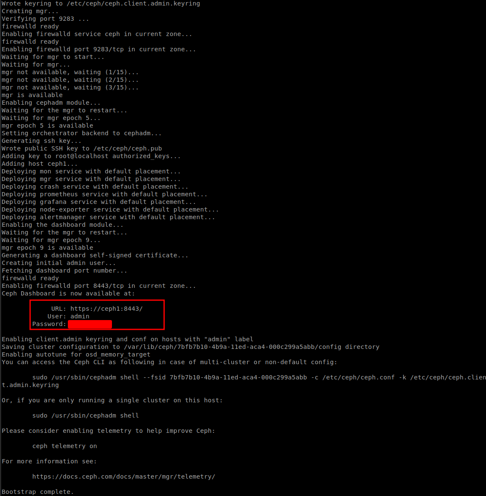
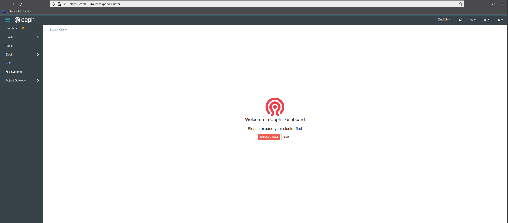

Data Persistance and Sharing with Ceph#
While Docker Swarm is great for keeping containers running (and restarting those that fail), it does nothing for persistent storage.
This means if you actually want your containers to keep any data persistent across restarts (hint: you do!), you need to provide shared storage to every docker node.
Ceph is an open-source software (software-defined storage) storage platform, implements object storage on a single distributed computer cluster, and provides 3-in-1 interfaces for object-, block and file-level storage. Ceph aims primarily for completely distributed operation without a single point of failure, scalable to the exabyte level, and freely available.
There are several ways to install Ceph. Choose the method that best suits your needs. For recommendation on ceph documentation is used cephadm. Cephadm installs and manages a Ceph cluster using containers and systemd, with tight integration with the CLI and dashboard GUI. Note on Cephadm: - Only supports Octopus and newer releases. - Fully integrated with the new orchestration API and fully supports the new CLI and dashboard features to manage cluster deployment. - Requires container support (podman or docker) and Python 3.
Prerequise#
3 x Virtual Machines (configured earlier for lab or dedicated for production), each with:
- Support for "modern" versions of Python and LVM
- At least 2GB RAM
- At least 50GB disk space (but it'll be tight)
- Connectivity to each other within the same subnet, and on a low-latency link (i.e., no WAN links)
- At least an additionnal disk dedicated to the Ceph OSD (add it to previous host if needed)
- Each node should have the IP of every other participating node hard-coded in /etc/hosts (including its own IP)
/etc/hosts#
Add those record to /etc/hosts, edit IP if required.
# Ceph Hosts
10.0.0.41 ceph1
10.0.0.42 ceph2
10.0.0.43 ceph3
# Swarm Hosts
10.0.0.51 swarm1
10.0.0.52 swarm2
10.0.0.53 swarm3
Installing Docker and Docker compose#
### Remove runc
dnf remove runc
### Adding docker repo
dnf install -y dnf-utils
dnf config-manager --add-repo https://download.docker.com/linux/centos/docker-ce.repo
dnf install -y docker-ce docker-ce-cli containerd.io
### Installing docker-compose
dnf install -y python3-pip
pip3 install --upgrade pip
pip3 install setuptools-rust
pip3 install docker-compose
Let's start the whale#
systemctl enable docker --now
Choose your first manager node#
One of your nodes will become the cephadm "master" node. Although all nodes will participate in the Ceph cluster, the master node will be the node which we bootstrap ceph on. It's also the node which will run the Ceph dashboard, and on which future upgrades will be processed. It doesn't matter which node you pick, and the cluster itself will operate in the event of a loss of the master node (although you won't see the dashboard)
Install cephadm on master node#
Run the following on the master node:
RELEASE="quincy"
# Use curl to fetch the most recent version of the standalone script
curl --silent --remote-name --location https://raw.githubusercontent.com/ceph/ceph/$RELEASE/src/cephadm/cephadm
#Make the cephadm script executable:
chmod +x cephadm
# To install the packages that provide the cephadm command, run the following commands:
./cephadm add-repo --release $RELEASE
./cephadm install
#Install Ceph-common and Confirm that cephadm is now in your PATH by running which:
dnf install -y ceph-common
which cephadm
Bootstrap new Ceph cluster#
The first step in creating a new Ceph cluster is running the cephadm bootstrap command on the Ceph cluster’s first host. The act of running the cephadm bootstrap command on the Ceph cluster’s first host creates the Ceph cluster’s first “monitor daemon”, and that monitor daemon needs an IP address. You must pass the IP address of the Ceph cluster’s first host to the ceph bootstrap command, so you’ll need to know the IP address of that host.
MYIP=`ip route get 1.1.1.1 | grep -oP 'src \K\S+'`
mkdir -p /etc/ceph
cephadm bootstrap --mon-ip $MYIP
Create a monitor and manager daemon for the new cluster on the local host.
Generate a new SSH key for the Ceph cluster and add it to the root user’s /root/.ssh/authorized_keys file.
Write a copy of the public key to /etc/ceph/ceph.pub.
Write a minimal configuration file to /etc/ceph/ceph.conf. This file is needed to communicate with the new cluster.
Write a copy of the client.admin administrative (privileged!) secret key to /etc/ceph/ceph.client.admin.keyring.
Add the _admin label to the bootstrap host. By default, any host with this label will (also) get a copy of /etc/ceph/ceph.conf and /etc/ceph/ceph.client.admin.keyring.

Check Ceph dashboard, access IP address of ceph01 https://ceph1:8443/ and use credentials from the cephadm bootstrap output then set a new password

Confirm that the ceph command is accessible with:
ceph -v
ceph version 17.2.1 (ec95624474b1871a821a912b8c3af68f8f8e7aa1) quincy (stable)
Check status of ceph cluster, OK for [HEALTH_WARN] because OSDs are not added yet
ceph -s
cluster:
id: 588df728-316c-11ec-b956-005056aea762
health: HEALTH_WARN
OSD count 0 < osd_pool_default_size 3
services:
mon: 1 daemons, quorum ceph01 (age 14m)
mgr: ceph01.wgdjcn(active, since 12m)
osd: 0 osds: 0 up, 0 in
data:
pools: 0 pools, 0 pgs
objects: 0 objects, 0 B
usage: 0 B used, 0 B / 0 B avail
pgs:
docker ps |grep ceph
systemctl status ceph-* --no-pager
Adding hosts to the cluster.#
To add each new host to the cluster, perform two steps:
# Install the cluster’s public SSH key in the new host’s root user’s
ssh-copy-id -f -i /etc/ceph/ceph.pub root@ceph2
ssh-copy-id -f -i /etc/ceph/ceph.pub root@ceph3
#Tell Ceph that the new node is part of the cluster, make sure python3 installed and available on new node
ceph orch host add ceph2
ceph orch host add ceph3
#Check the added host
ceph orch host ls
HOST ADDR LABELS STATUS
ceph1 10.0.0.41 _admin
ceph2 10.0.0.42
ceph3 10.0.0.43
Deploy OSDs to the cluster#
Run this command to display an inventory of storage devices on all cluster hosts:
ceph orch device ls
Hostname Path Type Serial Size Health Ident Fault Available
ceph1 /dev/sdb ssd 150G Unknown N/A N/A Yes
ceph2 /dev/sdb ssd 150G Unknown N/A N/A Yes
ceph3 /dev/sdb ssd 150G Unknown N/A N/A Yes
Tell Ceph to consume any available and unused storage device execute ceph orch apply osd --all-available-devices
ceph orch apply osd --all-available-devices
ceph -s
cluster:
id: 588df728-316c-11ec-b956-005056aea762
health: HEALTH_OK
services:
mon: 3 daemons, quorum ceph1,ceph2,ceph3 (age 5m)
mgr: ceph1.wgdjcn(active, since 41m), standbys: ceph02.rmltzq
osd: 9 osds: 0 up, 9 in (since 10s)
data:
pools: 0 pools, 0 pgs
objects: 0 objects, 0 B
usage: 0 B used, 0 B / 0 B avail
pgs:
ceph osd tree
ID CLASS WEIGHT TYPE NAME STATUS REWEIGHT PRI-AFF
-1 0.08817 root default
-5 0.02939 host ceph1
1 ssd 0.00980 osd.0 up 1.00000 1.00000
-7 0.02939 host ceph2
0 ssd 0.00980 osd.1 up 1.00000 1.00000
-3 0.02939 host ceph3
2 ssd 0.00980 osd.3 up 1.00000 1.00000
Deploy Ceph-mon (ceph monitor daemon)#
Ceph-mon is the cluster monitor daemon for the Ceph distributed file system. One or more instances of Ceph-mon form a Paxos part-time parliament cluster that provides extremely reliable and durable storage of cluster membership, configuration, and state. Add Ceph-mon to all node using placement option
ceph orch apply mon --placement="ceph1,ceph2,ceph3"
ceph orch ps | grep mon
mon.ceph1 ceph1 running (63m) 7m ago 63m 209M 2048M 16.2.6 02a72919e474 952d7
mon.ceph2 ceph2 running (27m) 7m ago 27m 104M 2048M 16.2.6 02a72919e474 f2d22
mon.ceph3 ceph3 running (25m) 7m ago 25m 104M 2048M 16.2.6 02a72919e474 bcc00
Result:
Deploy Ceph-mgr (ceph manager daemon)#
The Ceph Manager daemon (Ceph-mgr) runs alongside monitor daemons, to provide additional monitoring and interfaces to external monitoring and management systems.
ceph orch apply mgr --placement="ceph1,ceph2,ceph3"
ceph orch ps | grep mgr
mgr.ceph1.wgdjcn ceph1 *:9283 running (64m) 8m ago 64m 465M - 16.2.6 02a72919e474 c58a64249f9b
mgr.ceph2.rmltzq ceph2 *:8443,9283 running (29m) 8m ago 29m 385M - 16.2.6 02a72919e474 36f7f6a02896
mgr.ceph3.lhwjwd ceph3 *:8443,9283 running (7s) 2s ago 6s 205M - 16.2.6 02a72919e474 c740f964b2de
Set _admin label on all nodes#
The orchestrator supports assigning labels to hosts. Labels are free form and have no particular meaning by itself and each host can have multiple labels. They can be used to specify placement of daemons. But the _admin force the replication of change on ceph.conf to all node with this tag.
Official note:
By default, a ceph.conf file and a copy of the client.admin keyring are maintained in /etc/ceph on all hosts with the _admin label, which is initially applied only to the bootstrap host. We usually recommend that one or more other hosts be given the _admin label so that the Ceph CLI (e.g., via cephadm shell) is easily accessible on multiple hosts. To add the _admin label to additional host(s)
ceph orch host label add ceph3 _admin
ceph orch host label add ceph3 _admin
Prepare for cephFS mount#
It's now necessary to tranfer the following files to your other nodes, so that cephadm can add them to your cluster, and so that they'll be able to mount the cephfs when we're done:
| Path on master | Path on non-master |
|---|---|
| /etc/ceph/ceph.conf | /etc/ceph/ceph.conf |
| /etc/ceph/ceph.client.admin.keyring | /etc/ceph/ceph.client.admin.keyring |
Setup CephFS#
On the master node, create a cephfs volume in your cluster, by running ceph fs volume create data. Ceph will handle the necessary orchestration itself, creating the necessary pool, mds daemon, etc.
You can watch the progress by running ceph fs ls (to see the fs is configured), and ceph -s to wait for HEALTH_OK
Reproduce the following on each node:
mkdir /mnt/swarm
echo -e "
# Mount cephfs volume \n
ceph1,ceph2,ceph3:/ /mnt/swarm ceph name=admin,noatime,_netdev 0 0" >> /etc/fstab
mount -a
You can now play around and copy delete data on /mnt/swarm and check the replication accross the nodes.
References#
- https://docs.ceph.com/en/latest/cephadm/install/